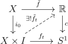
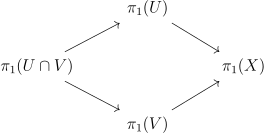
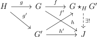

So far, we are only able to prove that the fundamental groups of some spaces are trivial. A common feature in algebraic topology is that given an invariant, we can compute it for a lot of spaces given that we know it for only a few. In order to get started in our case, we will need to know the fundamental group of the circle \(S^1\). Then the Seifert van-Kampen theorem will compute it for many more spaces.
A natural guess for what the fundamental group of the circle is is that it is isomorphic to \(\ZZ \), where the integer counts the number of times the loop winds around the circle in the counterclockwise direction. Indeed, that is the case. But how do we prove this? We will need a lemma, which will not be proven here.
Lemma 1.1 (Homotopy lifting property). Let \(X\) be a simply connected space, let \(c:\RR \to S^1\) be the map \(x \to e^{2\pi ix}\). If \(\tilde{f}_0:X \to \RR \) is any map, and \(f_t\) is any homotopy of \(f_t\) of \(f_0 = c \circ \tilde{f}_0\), then there is a unique homotopy \(\tilde{f}_t\) such that \(c \circ \tilde{f}_t = f_t\). This is summarized below.

Let’s choose \(1 \in S^1\) to be the base-point, and \(0 \in \RR \) as a base-point so that \(e^0 = 1\). Applying the lemma to any loop \(\gamma \) in \(S^1\) with base-point at \(1\), we find that the loop lifts to some path \(\tilde{\gamma }\) in \(\RR \). We don’t know where the path ends, but since it is a lift, it must end on some \(x|e^{2\pi i x} = 1\), which is an integer. Now let \(\Omega S^1\) be the set of loops in \(S^1\), and consider the function \(P(\gamma )\) that takes a loop \(\gamma \) to \(\tilde{\gamma }(1)\).
Lemma 1.2. \(P(\gamma )\) only depends on the homotopy class of \(\gamma \).
Proof. We can apply the homotopy lifting property to a homotopy \(\gamma _t\) of \(\gamma \), to get a homotopy of the lift \(\tilde{\gamma _t}\). Now \(\tilde{\gamma }_t(1)\) is a map \(I \to c^{-1}(1) = \ZZ \), which is a discrete set, so it must be constant, and so \(P(\gamma )\) is constant across the homotopy. □
Theorem 1.3. \(P(\gamma )\) induces a group isomorphism \(\pi _1(S_1) \to \ZZ \).
Proof. If \(f\star g\) is the composite of paths, then it is easy to see that \(c\circ (\bar{f} \star \bar{g}) = f \star g\), so that \(P(\gamma )\) is a homomorphism. The homomorphism is clearly surjective, as \(\RR \) is path connected, so connecting \(0\) to \(n\) and projecting down, we get a loop getting sent to \(n\). The homomorphism is injective, as if \(P(\gamma ) = 0\), then the lift of \(\gamma \) is a loop in \(\RR \). \(\pi _1(\RR ) = 0\), so we can homotope it to a constant map, and projecting the homotopy via \(c\), \(\gamma \) is nulhomotopic. □
Exercise 1.3.1. The natural quotient map \(S^2 \to \RR \PP ^2\), like the map \(c\), satisfies the homotopy lifting property. Assuming that \(\pi _1(S^2) = 0\), compute \(\pi _1(\RR \PP ^2)\) using the method used for \(S^1\).
As an application we can prove:
Theorem 1.4. A map \(f:D^2 \to D^2\) has a fixed point.
Proof. If not, we can consider the ray starting from \(f(x)\) toward \(x\), and let \(g(x\)) be its intersection point with the boundary \(S^1\). Since \(g|_{S^1}\) is the identity, if \(i\) is the inclusion \(S^1 \to D^2\), then \(g \circ i = 1_{S^1}\). Applying the fundamental group, we get homomorphisms \(\ZZ \to \{*\} \to \ZZ \) such that the composite is the identity, which is clearly impossible. □
The Seifert van-Kampen theorem allows one to compute fundamental groups of a space knowing fundamental groups on an open cover. Here we will consider when \(X\) is the union of two path-connected open sets \(U,V\), and the intersection \(U\cap V\) is also path connected.
We have the inclusions of fundmental groups:

Definition 2.1. The pushout of groups \(G,G'\) along a group \(H\) with maps \(g,g'\) into \(G,G'\) is defined to be a group denoted \(G\star _{H}G'\) with maps \(f,f'\) from \(G,G'\) into it such that \(f'\circ g' = f \circ g\) satisfying the following universal property: given group homomorphisms \(h,h'\) from \(G,G'\) to a group \(J\) such that \(h'\circ g' = h \circ g\), there is a unique homomorphism \(G\star _{H}G' \to J\) such that the diagram below commutes:

Exercise 2.1.2. Say that \(G = \langle x_i|r_i\rangle , G' = \langle y_j|r'_j\rangle \), and Suppose that \(H\) is generated by \(s_k\) and \(i_U(s_k), i_V(s_k)\) are the images in \(G,G'\). Then \(G\star _HG' = \langle x_i,y_i|r_i,r'_j,i_U(s_k)i_U(s_k)^{-1}\rangle \).
Theorem 2.2 (Seifert van-Kampen). Suppose \(U,V\) are in the situation described above. Then \(\pi _1(X)\) is the pushout of the group \(\pi _1(U),\pi _1(V)\) along \(\pi _1(U\cap V)\).
Proof. We will verify the universal property. Fix a base point \(x \in U\cap V\), and for every point in \(y \in X\), let \(\gamma _y\) be a path from \(y\) to \(x\) that stays in \(U\). if \(y \in U\) and in \(V\) if \(y \in V\). Suppose there are homomorphism \(h,h':\pi _1(U),\pi _1(V) \to J\) that agree on \(\pi _1(U\cap V)\). Given a loop \(\gamma : I \to X\), by compactness we can cut it into finitely many intervals such that each subinterval \([t_i,t_{i+1}]\) lies in only either \(U\) or \(V\) (\(t_0 = 0, t_n = 1\)). Now let \(\xi _i\) be the path \(I \to X\). given by some parameterization of \(\gamma \) on the interval \([t_i,t_{i+1}]\). Then \(\gamma \simeq C(\gamma ,t_i):=\xi _0 \star \gamma _{\xi _0(1)} \star \gamma _{\xi _0(1)}^{-1}\star \xi _1 \star \gamma _{\xi _1(1)} \star \gamma _{\xi _1(1)}^{-1} \star \dots \star \xi _{n-1}\). This shows that if the desired homomorphism \(f:\pi _1(X) \to J\) existed, it would be unique, as \(C(\gamma ,t_i)\) is a concatenation of loops lying in either \(U\) or \(V\). To show existence, we can define the homomorphism using the formula above. To show this is well defined, first note it doesn’t depend on \(\gamma _{y}\), as changing the path and taking the quotient of the two paths, there is a clear homotopy to a trivial map that stays in \(U\) or \(V\) on each subinterval. them will change \(C(\gamma ,t_i)\) by something that is nulhomotopic in \(\pi _1(U\cap V)\). Next, it will be shown that this isn’t dependant on the cutting into finitely many intervals. To see this, note that given two cuts \(t_i,t'_i\), \(C(\gamma ,t_i) \equiv C(\gamma ,t_i\cup t'_i)\) via a homotopy that stays in \(U,V\) whenever \(\gamma \) does. Since \(h,h'\) agree on \(\pi _1(U\cap V)\), whenever a subinterval lies in \(U\cap V\), it doesn’t matter if we switch the homomorphism to come from \(U\) or \(V\). Thus \(f(C(\gamma ,t_i) = f(C(\gamma ,t_i\cup t'_i))= f(C(\gamma ,t'_i))\). Now if \(\gamma _r\) is a homotopy, then consider the equivalence classes of \(r \in [0,1]\) given by identifying elements that \(f\) agrees on. A small neighborhood of each \(r\) will remain in the same homotopy class by doing the construction of \(f\) on a small neighborhood \([r-\ee ,r+\ee ]\times I\), so that each piece becomes homotopic by connectedness, the homotopy class is constant across the homotopy. □
Remark: there is a version of this theorem that doesn’t require the open sets and their intersections to be connected. However, in order to do so, one has to use multiple base-points and consider groupoids instead of groups. For example, \(\pi _1(S^1)\) could have been computed this way. That version of van-Kampen’s theorem is more flexible in that one can simplify computation using multiple base-points.
We can use this to compute \(\pi _1\) for many spaces. For example, let \(p,q\) be the north and south poles of \(S^2\), and let \(U = S^2-q, V=S^2-q\). \(U\cap V\) is path-connected, and \(U,V\) have trivial \(\pi _1\), so we see \(S^2\) has trivial \(\pi _1\) by the theorem. Similarly, \(\pi _1(S^n)=0,n\geq 2\).
Let \(X\vee Y\), the wedge sum of \(X, Y\) be the space given by gluing \(X,Y\) together along a base-point. If the base-points have neighborhoods that are contractible, then letting \(U\) be a neighborhood of \(X\), and \(V\) a neighborhood of \(Y\), we get that \(\pi _1(X\vee Y) = \pi _1(X)\star \pi _1(Y)\), where \(\star \) is the free product, which is the pushout over a trivial group.
Let’s compute the fundamental groups of all the surfaces. All the surfaces are connected sums of \(\RR \PP ^2\)s and \(T^2\)s. Recall that we can realize these surfaces as a quotient of the disk where we put a word on the edges, and identify intervals on the boundary that have the same letter (in an oriented way). The word on the boundary for \(\RR \PP ^2\) is \(aa\) and the word for \(T^2\) is \(aba^{-1}b^{-1}\). If \(w,w'\) are words for surface \(S,S'\), then \(S\#S'\) has \(ww'\) as a word (the letters should be changed so that \(w,w'\) use different letters). Recall that every closed surface is either a connected sum of \(T^2\)s or \(\RR \PP ^2\)s. To compute the fundamental group of these surfaces realized as a quotient of a disk, let \(U\) be the disk with the center point removed, so that it is homotopy equivalent to the boundary, which is a wedge sum of circles, so has fundamental group freely generated by each letter in the word. Let \(V\) be the interior of the disk, which has trivial fundamental group. \(U\cap V\) is homotopy equivalent to a circle, so has fundamental group \(\ZZ \), generated by a loop going around the circle once. By Seifert van Kampen, if the boundary has letters \(a_1,\dots a_n\), and the word on the boundary is \(w\), then the fundamental group is \(\langle a_1,\dots ,a_n|w\rangle \). For example, we get that \(\pi _1(T^2) = \langle a,b|aba^{-1}b^{-1}\rangle \),\(\pi _1(\RR \PP ^2\#\RR \PP ^2) = \langle a,b|aabb\rangle \). The next exercise gives another way to compute \(\pi _1(T^2)\).
Why are the surfaces in the classification theorem actually different? It is hard to compare fundamental groups directly, but we can compare them by computing their abelianizations, which is the universal way to make the group abelian. Given a presentation of a group, we can present the abelianization by interpreting multiplication as a commutative operation. For example, the abelianization of \(\pi _1(\RR \PP ^2\#\RR \PP ^2)\) is \(\langle a,b|2a+2b\rangle \), which is isomorphic as an abelian group to \(\ZZ \oplus \ZZ /2\ZZ \). This distinguishes it from the torus, whose fundamental group is \(\ZZ \oplus \ZZ \).